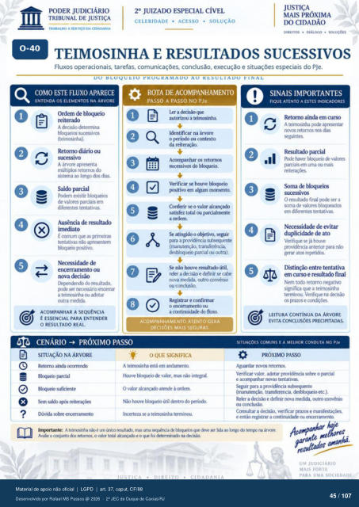

Transcrição automática em português, ainda não revisada. Confira grafia, prazos e termos jurídicos na imagem e no PDF antes de utilizar.
TRABALHO A DA CIDADANIA
CELERIDADE • ACESSO • SOLUÇÃO
DIREITOS • • SOLUÇÕES
TEIMOSINHA E RESULTADOS SUCESSIVOS
Fluxos operacionais. tarefas, comunicações. conclusão, execução e situações especiais do PJe.
DO BLOQUEIO YKOUKAMADO AO KESULIADO FINAL
COMO ESTE FLUXO APARECE
ENTENDA OS ELEMENTOS NA ÁRVORE
Ordem de bl«xpeio A decisü::) determina
blmtrios (teimcsinha).
Retorno diário ou sucessivo
A árvore apresenta rmiltiplos retornos do
sistana ao Icngo dcs dias. Saldo parcial
Pcxiem existir blcxltrios de valores parciais em
diferentes tentativas. Ausência de resultado
x É cxxnurn qlR as primeiras
tentativas nao çmtivo.
Necessidade de encerramento ou
nova decisão do resultado.
ser encerrar a teinwsinha Ou adotar
Outra rndda
ACOMPANHAR A SEQUÊNCIA
É ESSENCIAL PARA ENTENDER
O REAL.
O O
ROTA DE ACOMPANHAMENTO
PASSO A PASSO NO PJe
ler a decisão autMizCR1 a teirnosinha.
Identificar na árvore 0 perícxio ou contexto
da reiteração. Acompanhar os retornos
sucessivos do blcxpeio. Verificar houve blcxweio
em algum momento. Conferir se 0 valor alcançado
satisfez total ou prcialmente a ordem.
atingido 0 objetivo, seguir para a providência subsequente
(manutenção. transferéncia. desbkxlueio parcial outra).
não resultado útil, reler a &cisào e definir se catr
nova medida, outro convénio Ou ccxtclusáo.
Registrar e confirmar o encerramento ou
a continuidade do fluxo.
ACOMPANHAMENTO ATENTO GERA
DECISÕES MAIS SEGURAS.
CENÁRIO -+ PRÓXIMO PASSO
SITUAÇÃO NA ÁRVORE
Retcrno airxia prcial
Noqueio Sem sab
(Xvida súe errerranrnto
-e: OQUE SIGNIFICA
A teirmsinha está em andanrnta Houve blcxlueio valor, mas não integral
O vakr amie à ordem. houve bkxltrio útil &ntro do prícxb.
Irrerteza a teinuxinha termiruÃJ.
SINAIS IMPORTANTES
FIQUE ATENTO A ESTES INDICADORES
Retorno ainda em curso A tein:sinha apresentar
rettxnos (ias seguintes
Resultado parcial haver de valyes
parciais em uma mais %rna de bkxpeios
O resulta(h final rxxie ser a soma de valores
em diferentes tentativas. Necessidade de evitar
duplicidade de ato Verifique se já houve
Fovi&ncia anterior para não Distinção entre tentativa
em curso e resultado final Nem ttxlo retorno rVivo
significa que a teimosinha termirx:u. Verifique na
os grazos e
LEITURA CONTÍNUA DA ÁRVORE
EVITA CONCLUSÕES PRECIPITADAS.
SITUAÇÕES COMUNS E A MELHOR CONDUTA NO PJe
PRÓXIMO PASSO
Aguardar rwvcs retorrws. Verificar valor, adotar providência sobre o pucial
e K•ompanhar rmas tentativas para a providência subsequente
(manutenção. transferencia, desbloqueio etc.). Reler a decisão e definir nova medida. outro convénó
Consultar a d«isào. verificar lxazos e e entáo registrar a ccmtinuid± Ou errerrarnento.
Imprtante: A teirrv:sinha é "0 resultxh. mas lida árwe. Avalie o conjunto ret(xrxs, o val« total akarwado e o que foi determinado na decisáQ
UM JUDICIARIO
MAIS FORTE
Ver também o infográfico original (página 45)
